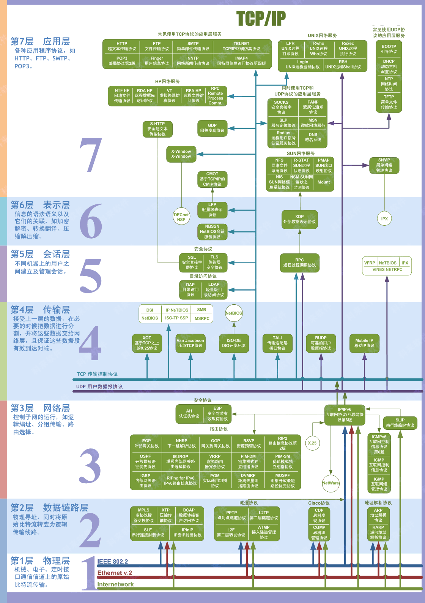

# 套接字 socket
# 概念
-
局域网和广域网
- 局域网：局域网将一定区域内的各种计算机、外部设备和数据库连接起来形成计算机通信的私有网络。
- 广域网：又称广域网、外网、公网。是连接不同地区局域网或城域网计算机通信的远程公共网络。
-
IP（Internet Protocol）：本质是一个整形数，用于表示计算机在网络中的地址。IP 协议版本有两个：IPv4 和 IPv6
-
IPv4（Internet Protocol version4）：
- 使用一个 32 位的整形数描述一个 IP 地址，4 个字节，int 型
- 也可以使用一个点分十进制字符串描述这个 IP 地址： 192.168.247.135
- 分成了 4 份，每份 1 字节，8bit（char），最大值为 255
- 0.0.0.0 是最小的 IP 地址
- 255.255.255.255 是最大的 IP 地址
- 按照 IPv4 协议计算，可以使用的 IP 地址共有 232 个
-
IPv6（Internet Protocol version6）：
- 使用一个 128 位的整形数描述一个 IP 地址，16 个字节
- 也可以使用一个字符串描述这个 IP 地址：2001:0db8:3c4d:0015:0000:0000:1a2f:1a2b
- 分成了 8 份，每份 2 字节，每一部分以 16 进制的方式表示
- 按照 IPv6 协议计算，可以使用的 IP 地址共有 2128 个
-
查看 IP 地址
l # linux$ ifconfig# windows$ ipconfig
# 测试网络是否畅通# 主机 a: 192.168.1.11# 当前主机: 192.168.1.12$ ping 192.168.1.11 # 测试是否可用连接局域网
$ ping www.baidu.com # 测试是否可用连接外网
# 特殊的 IP 地址: 127.0.0.1 ==> 和本地的 IP 地址是等价的# 假设当前电脑没有联网，就没有 IP 地址，又要做网络测试，可用使用 127.0.0.1 进行本地测试
-
-
端口
端口的作用是定位到主机上的某一个进程，通过这个端口进程就可以接受到对应的网络数据了。
比如：在电脑上运行了微信和 QQ, 小明通过客户端给我的的微信发消息，电脑上的微信就收到了消息，为什么？
运行在电脑上的微信和 QQ 都绑定了不同的端口
通过 IP 地址可以定位到某一台主机，通过端口就可以定位到主机上的某一个进程
通过指定的 IP 和端口，发送数据的时候对端就能接受到数据了端口也是一个整形数
unsigned short，一个 16 位整形数，有效端口的取值范围是：0 ~ 65535 (0 ~ 216-1)提问：计算机中所有的进程都需要关联一个端口吗，一个端口可以被重复使用吗？
不需要，如果这个进程不需要网络通信，那么这个进程就不需要绑定端口的
一个端口只能给某一个进程使用，多个进程不能同时使用同一个端口
-
OSI/ISO 网络分层模型
OSI（Open System Interconnect），即开放式系统互联。 一般都叫 OSI 参考模型，是 ISO（国际标准化组织组织）在 1985 年研究的网络互联模型。
计算机网络分层模型 OSI七层网络模型 TCP/IP四层概念模型 对应网络协议 应用层（Application） 应用层 HTTP、TFTP、FTP、NFS、WAIS、SMTP 表示层（Presentation） Telnet、Rlogin、SNMP、Gopher 会话层（Session） SMTP、DNS 传输层（Transport） 传输层 TCP、UDP 网络层（Network） 网络层 IP、ICMP、ARP、RARP、AKP、UUCP 数据链路层(Data Link) 网络接口层 FDDI、Ethernet、Arpanet、PDN、SLIP、PPP 物理层(Physical) IEEE802.1A、IEEE802.2-IEEE802.11 -
物理层
负责最后将信息编码成电流脉冲或其它信号用于网上传输
-
数据链路层
数据链路层通过物理网络链路供数据传输。
规定了 0 和 1 的分包形式，确定了网络数据包的形式； -
网络层
网络层负责在源和终点之间建立连接；
此处需要确定计算机的位置，通过 IPv4，IPv6 格式的 IP 地址来找到对应的主机 -
传输层
传输层向高层提供可靠的端到端的网络数据流服务。
每一个应用程序都会在网卡注册一个端口号，该层就是端口与端口的通信 -
会话层
会话层建立、管理和终止表示层与实体之间的通信会话；
建立一个连接（自动的手机信息、自动的网络寻址）; -
表示层:
对应用层数据编码和转化，确保以一个系统应用层发送的信息 可以被另一个系统应用层识别；
-

# 网络协议
网络协议指的是计算机网络中互相通信的对等实体之间交换信息时所必须遵守的规则的集合。一般系统网络协议包括五个部分：通信环境，传输服务，词汇表，信息的编码格式，时序、规则和过程。先来通过下面几幅图了解一下常用的网络协议的格式：
- TCP 协议 -> 传输层协议
- UDP 协议 -> 传输层协议
- IP 协议 -> 网络层协议
- 以太网帧协议 -> 网络接口层协议
数据的封装
在网络通信的时候，程序猿需要负责的应用层数据的处理 (最上层)
- 应用层的数据可以使用某些协议进行封装，也可以不封装
- 程序猿需要调用发送数据的接口函数，将数据发送出去
- 程序猿调用的 API 做底层数据处理
- 传输层使用传输层协议打包数据
- 网络层使用网络层协议打包数据
- 网络接口层使用网络接口层协议打包数据
- 数据被发送到 internet
- 接收端接收到发送端的数据
- 程序猿调用接收数据的函数接收数据
- 调用的 API 做相关的底层处理:
- 网络接口层拆包 ==> 网络层的包
- 网络层拆包 ==> 网络层的包
- 传输层拆包 ==> 传输层数据
- 如果应用层也使用了协议对数据进行了封装，数据的包的解析需要程序猿做
# socket 编程
Socket 套接字由远景研究规划局（Advanced Research Projects Agency, ARPA）资助加里福尼亚大学伯克利分校的一个研究组研发。其目的是将 TCP/IP 协议相关软件移植到 UNIX 类系统中。设计者开发了一个接口，以便应用程序能简单地调用该接口通信。这个接口不断完善，最终形成了 Socket 套接字。Linux 系统采用了 Socket 套接字，因此，Socket 接口就被广泛使用，到现在已经成为事实上的标准。与套接字相关的函数被包含在头文件 sys/socket.h 中。
socket 直译插座，通过上面的描述可以得知，套接字对应程序猿来说就是一套网络通信的接口，使用这套接口就可以完成网络通信。网络通信的主体主要分为两部分：客户端和服务器端。在客户端和服务器通信的时候需要频繁提到三个概念：IP、端口、通信数据，下面介绍一下需要注意的一些细节问题。
# 字节序
在各种计算机体系结构中，对于字节、字等的存储机制有所不同，因而引发了计算机通信领域中一个很重要的问题，即通信双方交流的信息单元（比特、字节、字、双字等等）应该以什么样的顺序进行传送。如果不达成一致的规则，通信双方将无法进行正确的编 / 译码从而导致通信失败。
字节序，顾名思义字节的顺序，就是大于一个字节类型的数据在内存中的存放顺序，也就是说对于单字符来说是没有字节序问题的，字符串是单字符的集合，因此字符串也没有字节序问题。
目前在各种体系的计算机中通常采用的字节存储机制主要有两种：Big-Endian 和 Little-Endian，下面先从字节序说起。
- Little-Endian -> 主机字节序 (小端)
- 数据的低位字节存储到内存的低地址位，数据的高位字节存储到内存的高地址位
- 我们使用的 PC 机，数据的存储默认使用的是小端
- Big-Endian -> 网络字节序 (大端)
- 数据的低位字节存储到内存的高地址位，数据的高位字节存储到内存的低地址位
- 套接字通信过程中操作的数据都是大端存储的，包括：接收 / 发送的数据、IP 地址、端口。
# IP 地址转换
# sockaddr 数据结构
# 套接字函数
# TCP 通信流程
TCP 是一个面向连接的，安全的，流式传输协议，这个协议是一个传输层协议。
- 面向连接：是一个双向连接，通过三次握手完成，断开连接需要通过四次挥手完成。
- 安全：tcp 通信过程中，会对发送的每一数据包都会进行校验，如果发现数据丢失，会自动重传
- 流式传输：发送端和接收端处理数据的速度，数据的量都可以不一致

# 服务器端通信流程
-
创建用于监听的套接字，这个套接字是一个文件描述符 (监听的)
int lfd = socket(); -
将得到的监听的文件描述符和本地的 IP 端口进行绑定
bind(); -
设置监听 (成功之后开始监听，监听的是客户端的连接)
listen(); -
等待并接受客户端的连接请求，建立新的连接，会得到一个新的文件描述符 (通信的)，没有新连接请求就阻塞
int cfd = accept(); -
通信，读写操作默认都是阻塞的
// 接收数据read(); / recv();
// 发送数据write(); / send();
-
断开连接，关闭套接字
close();
在 tcp 的服务器端，有两类文件描述符
- 监听的文件描述符
- 只需要有一个
- 不负责和客户端通信，负责检测客户端的连接请求，检测到之后调用 accept 就可以建立新的连接
- 通信的文件描述符
- 负责和建立连接的客户端通信
- 如果有 N 个客户端和服务器建立了新的连接，通信的文件描述符就有 N 个，每个客户端和服务器都对应一个通信的文件描述符

- 文件描述符对应的内存结构：
- 一个文件文件描述符对应两块内存，一块内存是读缓冲区，一块内存是写缓冲区
- 读数据：通过文件描述符将内存中的数据读出，这块内存称之为读缓冲区
- 写数据：通过文件描述符将数据写入到某块内存中，这块内存称之为写缓冲区
- 监听的文件描述符:
- 客户端的连接请求会发送到服务器端监听的文件描述符的读缓冲区中
- 读缓冲区中有数据，说明有新的客户端连接
- 调用 accept () 函数，这个函数会检测监听文件描述符的读缓冲区
- 检测不到数据，该函数阻塞
- 如果检测到数据，解除阻塞，新的连接建立
- 通信的文件描述符:
- 客户端和服务器端都有通信的文件描述符
- 发送数据：调用函数 write () /send ()，数据进入到内核中
- 数据并没有被发送出去，而是将数据写入到了通信的文件描述符对应的写缓冲区中
- 内核检测到通信的文件描述符写缓冲区中有数据，内核会将数据发送到网络中
- 接收数据：调用的函数 read () /recv (), 从内核读数据
- 数据如何进入到内核程序猿不需要处理，数据进入到通信的文件描述符的读缓冲区中
- 数据进入到内核，必须使用通信的文件描述符，将数据从读缓冲区中读出即可
基于 tcp 的服务器端通信代码:
// server.c | |
#include <stdio.h> | |
#include <stdlib.h> | |
#include <unistd.h> | |
#include <string.h> | |
#include <arpa/inet.h> | |
int main() | |
{ | |
// 1. 创建监听的套接字 | |
int lfd = socket(AF_INET, SOCK_STREAM, 0); | |
if(lfd == -1) | |
{ | |
perror("socket"); | |
exit(0); | |
} | |
// 2. 将 socket () 返回值和本地的 IP 端口绑定到一起 | |
struct sockaddr_in addr; | |
addr.sin_family = AF_INET; | |
addr.sin_port = htons(10000); // 大端端口 | |
// INADDR_ANY 代表本机的所有 IP, 假设有三个网卡就有三个 IP 地址 | |
// 这个宏可以代表任意一个 IP 地址 | |
// 这个宏一般用于本地的绑定操作 | |
addr.sin_addr.s_addr = INADDR_ANY; // 这个宏的值为 0 == 0.0.0.0 | |
// inet_pton(AF_INET, "192.168.237.131", &addr.sin_addr.s_addr); | |
int ret = bind(lfd, (struct sockaddr*)&addr, sizeof(addr)); | |
if(ret == -1) | |
{ | |
perror("bind"); | |
exit(0); | |
} | |
// 3. 设置监听 | |
ret = listen(lfd, 128); | |
if(ret == -1) | |
{ | |
perror("listen"); | |
exit(0); | |
} | |
// 4. 阻塞等待并接受客户端连接 | |
struct sockaddr_in cliaddr; | |
int clilen = sizeof(cliaddr); | |
int cfd = accept(lfd, (struct sockaddr*)&cliaddr, &clilen); | |
if(cfd == -1) | |
{ | |
perror("accept"); | |
exit(0); | |
} | |
// 打印客户端的地址信息 | |
char ip[24] = {0}; | |
printf("客户端的IP地址: %s, 端口: %d\n", | |
inet_ntop(AF_INET, &cliaddr.sin_addr.s_addr, ip, sizeof(ip)), | |
ntohs(cliaddr.sin_port)); | |
// 5. 和客户端通信 | |
while(1) | |
{ | |
// 接收数据 | |
char buf[1024]; | |
memset(buf, 0, sizeof(buf)); | |
int len = read(cfd, buf, sizeof(buf)); | |
if(len > 0) | |
{ | |
printf("客户端say: %s\n", buf); | |
write(cfd, buf, len); | |
} | |
else if(len == 0) | |
{ | |
printf("客户端断开了连接...\n"); | |
break; | |
} | |
else | |
{ | |
perror("read"); | |
break; | |
} | |
} | |
close(cfd); | |
close(lfd); | |
return 0; | |
} |
# 客户端的通信流程
在单线程的情况下客户端通信的文件描述符有一个，没有监听的文件描述符
-
创建一个通信的套接字
int cfd = socket(); -
连接服务器，需要知道服务器绑定的 IP 和端口
connect(); -
通信
p // 接收数据read(); / recv();
// 发送数据write(); / send();
-
断开连接，关闭文件描述符 (套接字)
close();
基于 tcp 通信的客户端通信代码:
// client.c | |
#include <stdio.h> | |
#include <stdlib.h> | |
#include <unistd.h> | |
#include <string.h> | |
#include <arpa/inet.h> | |
int main() | |
{ | |
// 1. 创建通信的套接字 | |
int fd = socket(AF_INET, SOCK_STREAM, 0); | |
if(fd == -1) | |
{ | |
perror("socket"); | |
exit(0); | |
} | |
// 2. 连接服务器 | |
struct sockaddr_in addr; | |
addr.sin_family = AF_INET; | |
addr.sin_port = htons(10000); // 大端端口 | |
inet_pton(AF_INET, "192.168.237.131", &addr.sin_addr.s_addr); | |
int ret = connect(fd, (struct sockaddr*)&addr, sizeof(addr)); | |
if(ret == -1) | |
{ | |
perror("connect"); | |
exit(0); | |
} | |
// 3. 和服务器端通信 | |
int number = 0; | |
while(1) | |
{ | |
// 发送数据 | |
char buf[1024]; | |
sprintf(buf, "你好, 服务器...%d\n", number++); | |
write(fd, buf, strlen(buf)+1); | |
// 接收数据 | |
memset(buf, 0, sizeof(buf)); | |
int len = read(fd, buf, sizeof(buf)); | |
if(len > 0) | |
{ | |
printf("服务器say: %s\n", buf); | |
} | |
else if(len == 0) | |
{ | |
printf("服务器断开了连接...\n"); | |
break; | |
} | |
else | |
{ | |
perror("read"); | |
break; | |
} | |
sleep(1); // 每隔 1s 发送一条数据 | |
} | |
close(fd); | |
return 0; | |
} |
# TCP 协议介绍
TCP 协议是一个安全的、面向连接的、流式传输协议，所谓的面向连接就是三次握手，对于程序猿来说只需要在客户端调用 connect () 函数，三次握手就自动进行了。先通过下图看一下 TCP 协议的格式，然后再介绍三次握手的具体流程。